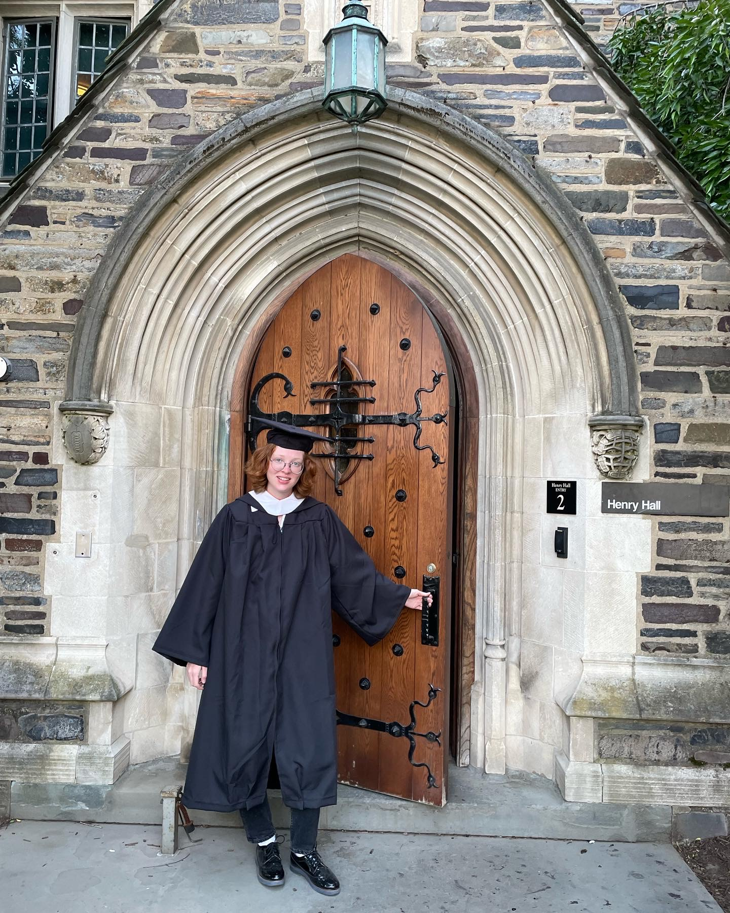
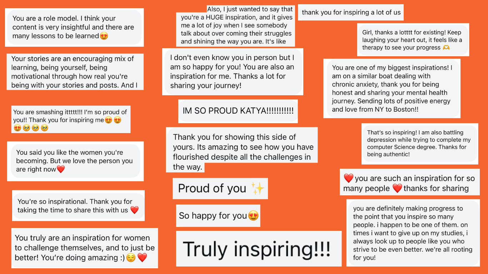

Timeless Educational Content for the AI Generation

Katya Ivshina is a Boston-based content creator, AI educator, and mathematician dedicated to making artificial intelligence accessible. She moved to the United States alone at 17 to pursue a bachelors degree in Mathematics at Princeton University.
Over the years, Katya has become a trusted voice in the STEM community building an audience of over 100,000 followers and more than 30 million views.
As a first-generation immigrant and a woman in STEM, Katya shares her unique journey to inspire others to pursue their dreams with confidence.
She is also a dedicated dancer and is currently completing a PhD in Applied Mathematics at Harvard University.
Based and work in Boston 🇺🇸
Making AI Accessible
From Concept to CreationPrinceton to Harvard
Vision to RealityWomen in STEM
Inspiring the Next GenerationCreative Expression
Art Meets ScienceCreating comprehensive educational content tailored to making artificial intelligence accessible to everyone. From beginner concepts to advanced applications, I construct learning pathways to guide students to success.
I help students create a powerful, memorable understanding of mathematics that connects with their learning goals. This includes setting up study strategies and building comprehensive knowledge frameworks to maintain consistency across topics.
Designing seamless, intuitive educational experiences that captivate and delight. My content prioritizes understanding student needs and behaviors, focusing on accessibility and engagement to produce functional and enjoyable learning materials.
Visually stunning content that is both beautiful and practical. Specializing in clean, modern, and engaging educational materials to enhance student interaction and ensure a cohesive learning experience across all platforms.
Advanced research in applied mathematics with focus on real-world applications. My academic work bridges theoretical concepts with practical implementations, creating production-ready solutions to impress and engage the scientific community.
Personalized guidance for students pursuing STEM careers, with particular focus on PhD admissions, career transitions, and academic success strategies.
WORKED WITH INTERNATIONAL STUDENTS
"Katya's PhD admissions mentorship program was an excellent experience that provided insider information I couldn't find anywhere else. Thanks to her guidance, I now feel I'm at a next level of preparedness for PhD applications, with a clear advantage in understanding what top programs are really looking for."
"Every single thing Katya helped me with was extremely helpful! As a first generation person of color, this is the type of advice that I would otherwise spend months trying to dig for. She made me really believe in myself and my abilities!!"
"This has probably been the best investment that I’ve ever made towards my future, every dollar was worth it."
"I loved how interactive this session was, you spent all your time going in depth and answering questions during your presentation and not leaving it all at the end! I enjoyed sharing our own experiences and hearing feedback"
"Thank you so much for introducing this complex topic and making it so accessible and easy to understand."
"Learning about your background before teaching this course made us respect/awe you even more. Keep teaching and inspiring students like us around the world."
